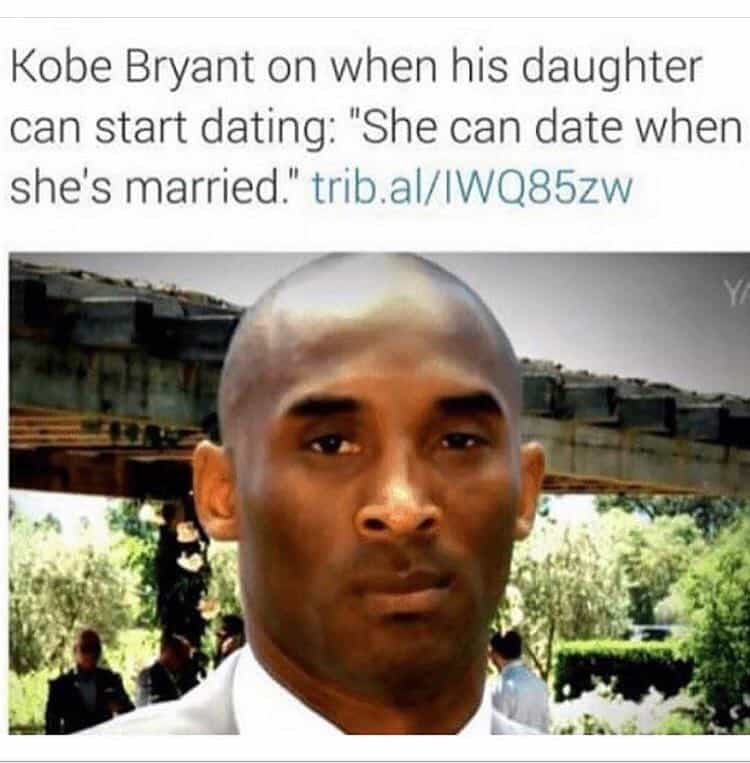

Daryush "Roosh" Valizadeh created ROK in October 2012. You can visit his blog at RooshV.com or follow him on Twitter and Facebook.


After absorbing the experiences of hundreds of men (and women), it has become clear to me that dating simply doesn’t work for finding a life partner. No other tactic has a greater failure rate in creating stable marriages and families than Western-style dating, a method that only excels in finding short-term sexual partners.
Before writing off dating completely, we have to first define what a relationship success story looks like. I’d define it as a marriage that is maintained for at least 25 years and which results in the birth of at least one child, meaning no catastrophic divorce that harms the upbringing of children. Many people you know who seem happily married are not yet a success story, but since most of my readers are under 40, let’s lower the bar and define success as any stable marriage that is at least ten years in length.
How many people do you know who have been happily married for at least ten years? Now how many people do you know who have not been married for ten years and who likely have no hope for that outcome in the next decade? Unless you are a part of a religious community, I predict that you know far more people who have absolutely nothing to show for their dozens or hundreds of dates and hookups. As dating has become even more shallow thanks to apps like Tinder, most people will outright fail in finding a mate through the strategy of dating.

If dating was an experimental drug intended to treat cancer, the experiment would stop halfway through because of how disastrous it is on the patient. Randomly opening a phone book and marrying the first opposite sex name you come across would have the same success rate, assuming there is mutual physical attraction. There is nothing within our DNA that allows us to successfully sample a hundred or more people, often sexually, to find love or compatibility without also succumbing to hedonism, self-harm, alcohol abuse, or outright sterility through the contraction of STDs. This is no surprise upon realizing that dating in the West began with 19th century prostitutes and homosexuals to later be normalized for everyone without having to prove its utility. It was never intended as a way for heterosexuals to find long-term partners, and any culture that has implemented it has suffered both lowered marriage and birth rates.
Dating is merely a technique for gaining sex, not relationships. It’s a miracle invention for men who want no-strings attached fun, and I have benefited from it for over 15 years. I almost can’t believe that I can fuck a girl after only knowing her for a couple of hours, all from making a few jokes and maintaining a beautiful beard, but that’s exactly what dating allows. All parties come to an end, however, leaving me and many others of my generation with no partner we love or otherwise happy ending that you see in Pedowood movies, because dating was never designed to help you find life-long partners. It’s a dead-end that explains why so many Western adults in their 30’s have never had a committed monogamous relationship of even a year in length.
I often get emails from both men and women who want marriage but are struggling with the dating scene. Mainstream culture has taught them to essentially become a detached professional negotiator who plays endless psychological games while interacting with 1,000 or more potential partners in the hopes that one will work out. Imagine if you used this soul-crushing strategy with other areas of life.
Yet this is what we do with dating, and we buy into it because it’s not so bad in the beginning, especially for women. They like being hotly pursued by so many men in the prime of their physical beauty, thinking that they can hold out a few years until Mr. Right appears out of nowhere, but all those suitors just want to fuck and nothing more. Men like myself greatly enjoy the sex rewards that come with dating, but am I really going to marry the woman who slept with me on the first date and who will kiss my son with a mouth that has been gagged on by over a dozen cocks? I rather be single, and apparently, a lot of other men too.
You may be one of the lucky few who got dating to work, likely from meeting someone in your social circle, but for every one success story, there are a dozen people who are failing or will fail in their marriage goals. Simply pull up a map of the world divorce rate and you’ll see a near perfect correlation of divorce with countries that permit widespread dating before marriage. In fact, any country that uses dating as a mechanism of pair bonding will inevitably suffer from cultural collapse, because they have no choice but to allow massive third-world immigration, often from incompatible cultures, to make up for the population shortfall.
When I’m in the mood for easy sex, I’ll date. I’ll approach a girl, spit my game, and bang her no later than the third date, but I’d be a fool to use that strategy to find a wife, because I know that a woman who is open to dating random men has a sexual history that my strict standards simply won’t be able to accept. Since I’m not plugged into a church community or traditional social circle, this means that I’ll be stuck on the more shallow end of relationships with women, an outcome that is not ideal, but one that I’ll accept far more eagerly than using dating as a means to find someone I could be with for the rest of my life.
This article was originally published on Roosh V.
Read Next: The Hunt For A Moral Woman